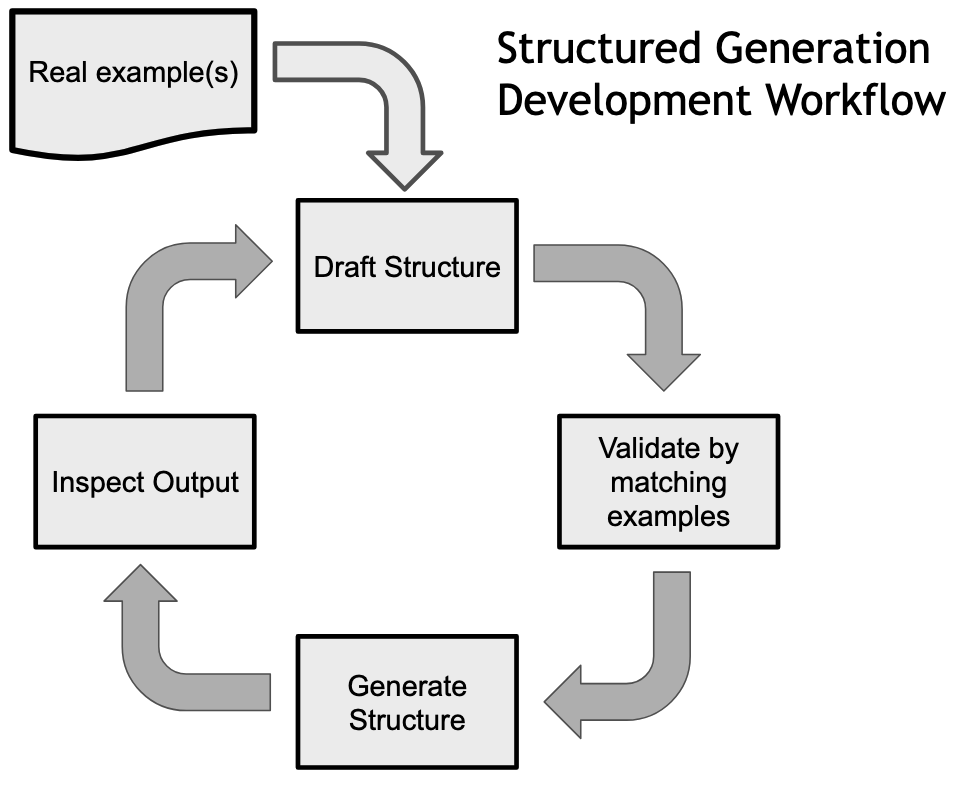

Structured Generation Workflow: Generating Synthetic Phone Numbers
This is a condensed version of Coding for Structured Generation with LLMs.
For this example we're going to be building an LLM program to generate synthetic data in the form of realistic looking phone numbers for Washington State. Using an LLM for this task is a bit overkill since we could just as easily accomplish this with a tool like Faker, but this example still serves as a useful way to demonstrate a workflow for using structured generation.
Unstructured approach
Before diving into how to use structure generation for this task let's start with an unstructured example. We begin by loading our model:
import outlines
import transformers
model_name = 'microsoft/Phi-3-mini-4k-instruct'
model = outlines.from_transformers(
transformers.AutoModelForCausalLM.from_pretrained(model_name),
transformers.AutoTokenizer.from_pretrained(model_name)
)
Next we need a prompt for this model. Since we're focusing on structured generation, we won't be engaging in any form of "prompt hacking" and will be leaving this prompt untouched for the rest of this example.
prompt_phone = """
Please generate a realistic phone number for Washington State in the following format
(555) 555-5555
"""
With our prompt ready we can now generate 10 example phone numbers
phone_generator_unstruct = outlines.Generator(model)
for _ in range(3):
print(phone_generator_unstruct(prompt_phone, max_new_tokens=12))
I'd be happy to help you generate a realistic phone\ I cannot generate a real phone number as I'm just\ I'm an AI and don't have the ability\ Sure! Here is a randomly generated phone number in the format\ Here's a phone number that fits the format for a\ In Washington State, phone numbers typically have a three-dig\ Here are a few examples of phone numbers that could be considered\ I'd be happy to help generate a realistic phone number\ I'd be happy to help you generate a random phone\ Based on the format you provided, a realistic phone number for\
As we can see, none of these outputs are even phone numbers!
Let's see if we can improve this using structured generation.
The Structured Generation Workflow
In order to solve this problem we're going to introduce a Structured Generation Workflow outlined in this image:

Let's step through this:
Real example
We start with a real example phone number, in this case for the Seattle Public Library, that we can use to verify the structure we are creating.
For a simple example like this, we'll just be using a single phone number, for more complex examples it can be helpful to have more examples.
Draft Structure
The next step in the process is for use to define a simple regex that we feel correctly models our real data.
Next we need to validate this regex against our real data.
Validate by matching examples
Whenever writing non-trivial code with structured generation it is essential that you first validate the code against your real data example(s).
We'll start with a simple method of validation: just checking that our regex matches the data.
import re
re.match(phone_regex_1.pattern, phone_number)
# <re.Match object; span=(0, 14), match='(206) 386-4636'>
Now that we have a match, we can move on to generating structured output!
Generate Structure
We're ready to see if structured generation can make an improvement over our initial unstructured approach:
phone_generator_v1 = outlines.Generator(model, phone_regex_1)
for _ in range(3):
print(phone_generator_v1(prompt_phone))
(206) 555-1234\ (206) 555-1234\ (206) 555-1234\ (206) 555-1234\ (206) 555-1234\ (206) 555-1234\ (206) 123-4567\ (206) 555-1234\ (206) 555-1234\ (206) 555-1234
At least we have phone numbers! But I think we can do better!
Inspect output
In this case the model did create phone numbers and, impressively, got the area code correct. So using structured generation did improve things. However these numbers are pretty boring. Let's improve that structure!
Iteration
We've walked through the loop once, so we can go quickly now through each iteration.
We start by improving our structure:
Before rushing to another round of generation, let's validate this new regex. We'll add just a bit more sophistication over our last check:
Now that we've validated, let's generate with this new regex!phone_generator_v2 = outlines.Generator(model, phone_regex_2)
for _ in range(3):
print(phone_generator_v2(prompt_phone))
(206) 867-5309\ (206) 666-7777\ (206) 444-3333\ (206) 444-3333\ (206) 943-2222\ (206) 323-6789\ (206) 444-3333\ (206) 867-5309\ (206) 466-2255\ (206) 222-3333
Better, but I don't like those repeated sequences. Like good software developers, let's iterate again!
Reiteration - with debugging
Here's a fancier regex that should give us more interesting results:
This looks good to me, but there's a subtle bug, that's why we always need to validate our structure against real data. This time we'll make our validator do a bit more work to verify the correct string is matched:
if not re.match(phone_regex_3_error, phone_number):
print("Regex fails match")
else:
matched_string = re.match(phone_regex_3_error, phone_number)[0]
if matched_string == phone_number:
print("Successful match")
else:
print(f"Error {matched_string} != {phone_number}")
Error (206) 386-463 != (206) 386-4636
Ah! We were missing the last digit, let's fix that and regenerate:
phone_regex_3_fixed = Regex(r'\([0-9]{3}\) [2-4][7-9][4-6]-[3-6][2-8][1-4][6-9]')
phone_generator_v3 = outlines.Generator(model, phone_regex_3_fixed)
for _ in range(3):
print(phone_generator_v3(prompt_phone))
(206) 494-3216\ (206) 374-6218\ (206) 494-3337\ (206) 476-3216\ (206) 484-3548\ (206) 495-3218\ (206) 494-5517\ (206) 375-4636\ (206) 384-6216\ (206) 385-6218
Much better!
Now you've seen a quick example of the structured generation workflow that can be used at the basis for building and iteration on much larger structured generation tasks!